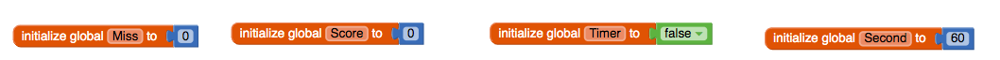

This app presents a new type of event which you haven't encountered before. What is that new event? How often is it triggered?
The new type of event that I encountered was the clock timer and image sprite. It is trigggered every half a second.
Consider the apps you've developed so far. Can you list all the different events your apps have responded to? What other events do you think an app can respond to? Explore some of the components in App Inventor and see what event handlers they have.
There have been many events that have happened in the apps I've developed, some of the events that I have used was button clicking, accelerometer shaking, list pickers, canvas touch, canvas dragged, sprite touched, clock timers, and many more. Other events I think an app could respond to is using accelerometer, when shaked text to speech would play whatever is on the apps screen or notifer after choosing, and many more.
What are the advantages of writing procedures in programming? Use the procedures you wrote for this app as examples in your response.
Some advantages of writing procedures in programming is you can have shorter codes for codes that replicate. Also, making it easier for other coders to understand your code if they were to look at it. For example in our app we had a procedure for our "game over" code since it had many intricate codes that consist of a notifier, sprite timer, and global seconds. If we just had that code in our app it'll make our code super long and harder to understand so when we seperated it to become a procedure we can use that code multiple times also making it easier to understand.
Describe the purpose of each enhancement that you added to your app. Give brief descriptions of the enhancements and provide screenshots of important blocks and describe how you used them to solve certain programming problems. Include these descriptions in your write-up, below.
Our LightsOff app had an enhacement of "start game when tablet is shaked", so when the tablet was shaked the timer for the app would start and you would have 1 minute to get the highest score possible.
Some important blocks my app had was the "initialize global" since we used it in almost every code. This code solves certain programming problems like the score of our app, without the "initialize global" block we would not be able to change our score or add a highscore tracker into our app.
When the user touches an ImageSprite, both the Canvas.Touched and ImageSprite.Touched events are triggered. This is important for more complex games. For instance, suppose there are "good" and "bad" sprites in your game. If you hit one, you earn a point. If you hit the other, you lose two points. If you hit the Canvas and don't hit the ImageSprite, you lose 1 point. How would you code this?
You would code this by having a global score set to 0, renaming the image sprites like BadSprite and GoodSprite, then use "when Canvas.Touched" set global score minus 1 and "when GoodSprite.Touched" set global score would increase to 1 and "when BadSprite.Touched" set global score to minus 2.
How do you speed up the movement of the ImageSprite? What is the fastest it could move?
You can speed up the movement of an ImageSprite by changing the Interval of the ImageSprite, in our app we subtract 50 milliseconds from 1000 milliseconds to change the movement of an ImageSprite. The fastest an ImageSprite can move is a millisecond.
Include a screenshot of your app's face drawing, and the code involved, showing the use of a loop and a procedure. You can take a screenshot on most Android devices by pressing the power button and the volume down button and the same time and then emailing the photo from the gallery to yourself, or uploading the image to Google Drive. To practice for the Create task, describe how two of the algorithms (procedures that you wrote) in the code combine to form a bigger algorithm (the drawFace procedure).
A prodecdure that I wrote "MouthForward" is used to form the bigger algorithm by drawing the mouth of the robot. The other procedue I wrote "Square40" is used to form the bigger algorithm by making the square the robot's mouth and eyes are in.
Can you draw a triangle with this set of Logo commands? Discuss how or why not.
I believe you cannot draw a triangle with this set of Logo commands since there are only 90 degree turns which cannot make a triangle since triangles are less than 90 degree turns.
Discuss: If you were designing the Logo language, how would you change some of our basic commands so that it would be easy to draw a triangle and easier to draw other shapes -- i.e., what should the basic commands do that would make drawing easier.
If I were to design a Logo Language I would change some basic commands like not only does it turn 90 degrees, it owuld also turn any degrees that you input so drawing a triangle and any shape would be easier.
What weaknesses do you find in using the procedures (the abstractions) we gave you -- forward, turn -- for drawing simple shapes? How would you change the definitions of these procedures to make it easier to draw shapes? Give a specific example that illustrates how a more powerful set of procedures would improve things.
Some weakeness I found using the procedures that you gave me were that when turning, it would only turn 90 degrees so if I wanted to turn left I would have to put the turn code down twice. You could make these procedures more powerful by having left or right turns.